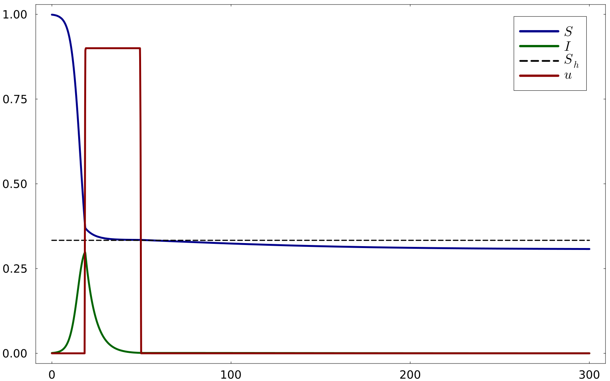
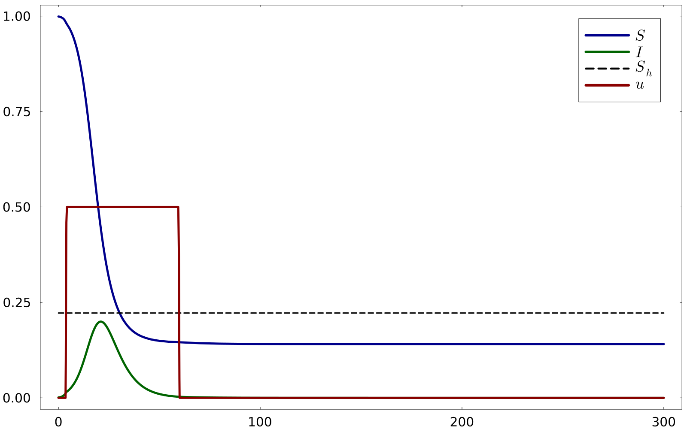
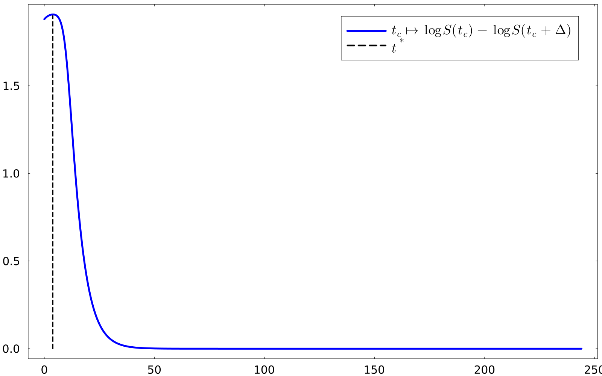

using OptimalControl
using NLPModelsIpopt
using DifferentialEquations
using Plots
using Plots.PlotMeasures
using LaTeXStrings
using Rootsfunction SIRocp(tf, S0, I0, Q, β, γ, umax)
ocp = @def begin
t ∈ [0, tf], time
x = (S, I, C) ∈ R^3, state
u ∈ R, control
S(0) == S0
I(0) == I0
C(0) == Q
C(tf) ≥ 0.0
0 ≤ u(t) ≤ umax
0.0 ≤ I(t) ≤ 1.0
0.0 ≤ S(t) ≤ 1.0
ẋ(t) == [-(1 - u(t)) * β * S(t) * I(t),
(1 - u(t)) * β * S(t) * I(t) - γ * I(t),
-u(t)]
-S(tf) → min
end
sol = solve(ocp, :direct, :adnlp, :ipopt;
disc_method = :gauss_legendre_3,
grid_size=1000,
tol=1e-9,
display=true)
return sol
endSIRocp (generic function with 1 method)tf = 300
γ = 0.2
S0 = 0.999
I0 = 0.001
Q = 28
β = [0.6,0.9]
umax = [0.9, 0.5]
sol1 = SIRocp(tf, S0, I0, Q, β[1], γ, umax[1])
sol2 = SIRocp(tf, S0, I0, Q, β[2], γ, umax[2])CTModels.Solution{CTModels.TimeGridModel{Vector{Float64}}, CTModels.TimesModel{CTModels.FixedTimeModel{Int64}, CTModels.FixedTimeModel{Int64}}, CTModels.StateModelSolution{CTModels.var"#112#134"{Interpolations.Extrapolation{Vector{Float64}, 1, Interpolations.GriddedInterpolation{Vector{Float64}, 1, Vector{Vector{Float64}}, Interpolations.Gridded{Interpolations.Linear{Interpolations.Throw{Interpolations.OnGrid}}}, Tuple{Vector{Float64}}}, Interpolations.Gridded{Interpolations.Linear{Interpolations.Throw{Interpolations.OnGrid}}}, Interpolations.Line{Nothing}}}}, CTModels.ControlModelSolution{CTModels.var"#113#135"{Interpolations.Extrapolation{Vector{Float64}, 1, Interpolations.GriddedInterpolation{Vector{Float64}, 1, Vector{Vector{Float64}}, Interpolations.Gridded{Interpolations.Linear{Interpolations.Throw{Interpolations.OnGrid}}}, Tuple{Vector{Float64}}}, Interpolations.Gridded{Interpolations.Linear{Interpolations.Throw{Interpolations.OnGrid}}}, Interpolations.Line{Nothing}}}}, CTModels.VariableModelSolution{Vector{Float64}}, CTModels.var"#116#138"{Interpolations.Extrapolation{Vector{Float64}, 1, Interpolations.GriddedInterpolation{Vector{Float64}, 1, Vector{Vector{Float64}}, Interpolations.Gridded{Interpolations.Linear{Interpolations.Throw{Interpolations.OnGrid}}}, Tuple{Vector{Float64}}}, Interpolations.Gridded{Interpolations.Linear{Interpolations.Throw{Interpolations.OnGrid}}}, Interpolations.Line{Nothing}}}, Float64, CTModels.DualModel{CTModels.var"#119#141"{CTModels.var"#117#139"}, Vector{Float64}, CTModels.var"#122#144"{CTModels.var"#120#142"}, CTModels.var"#125#147"{CTModels.var"#123#145"}, CTModels.var"#127#149"{CTModels.var"#126#148"}, CTModels.var"#130#152"{CTModels.var"#129#151"}, Vector{Float64}, Vector{Float64}}, CTModels.SolverInfos{Dict{Symbol, Any}}}Case 1: $\beta = 0.6$ and $\bar{u} = 0.9$
plot(
t -> state(sol1)(t)[1], 0, tf,
label = false, color = :darkblue, lw = 5,
grid = false,
size = (1600, 1000),
legendfontsize = 24,
tickfontsize = 20,
guidefontsize = 26,
framestyle = :box,
foreground_color_subplot = :black
)
plot!(
t -> state(sol1)(t)[2], 0, tf,
label = false, color = :darkgreen, lw = 5
)
plot!(
[0, tf], [γ/β[1], γ/β[1]],
label = false, lw = 3, ls = :dash, color = :black
)
plot!(
t -> control(sol1)(t)[1], 0, tf,
label = false, color = :darkred, lw = 5
)
plot!([NaN], [NaN], label=L"$S$", lw=2, color=:darkblue)
plot!([NaN], [NaN], label=L"$I$", lw=2, color=:darkgreen)
plot!([NaN], [NaN], label=L"$S_h$", lw=1.5, ls=:dash, color=:black)
plot!([NaN], [NaN], label=L"$u$", lw=2, color=:darkred)
Case 2: $\beta = 0.9$ and $\bar{u} = 0.5$
gr()
plot(
t -> state(sol2)(t)[1], 0, tf,
label = false, color = :darkblue, lw = 5,
grid = false,
size = (1600, 1000),
legendfontsize = 24,
tickfontsize = 20,
guidefontsize = 26,
framestyle = :box,
foreground_color_subplot = :black
)
plot!(
t -> state(sol2)(t)[2], 0, tf,
label = false, color = :darkgreen, lw = 5
)
plot!(
[0, tf], [γ/β[2], γ/β[2]],
label = false, lw = 3, ls = :dash, color = :black
)
plot!(
t -> control(sol2)(t)[1], 0, tf,
label = false, color = :darkred, lw = 5
)
# Dummy lines for thin, clean legend entries
plot!([NaN], [NaN], label = L"$S$", lw = 2, color = :darkblue)
plot!([NaN], [NaN], label = L"$I$", lw = 2, color = :darkgreen)
plot!([NaN], [NaN], label = L"$S_h$", lw = 1.5, ls = :dash, color = :black)
plot!([NaN], [NaN], label = L"$u$", lw = 2, color = :darkred)
ϕ2(t) = (costate(sol2)(t)[1]-costate(sol2)(t)[2])*β[2]*state(sol2)(t)[1]*state(sol2)(t)[2] - costate(sol2)(t)[3] # switching function
t2 = find_zero(ϕ2, (0.0, 30), Bisection())3.8847488072913365Case 2: Plot of $\log(S(t_c)) - \log(S(t_c+\Delta))$
Δ2 = Q / umax[2]
tspan = (0.0, tf)
function control__(t, tc)
if t ≥ tc && t ≤ tc + Δ2
return umax[2]
else
return 0.0
end
end
function sir!(du, u, p, t)
S, I = u
tc = p
u_val = control__(t, tc)
du[1] = -(1 - u_val) * β[2] * S * I
du[2] = (1 - u_val) * β[2] * S * I - γ * I
end
tcs = 0.0:0.05:(tf-Δ2)
result_values_ = Float64[]
for tc in tcs
prob_ = ODEProblem(sir!, [S0, I0], tspan, (tc))
sol_ = solve(prob_, Tsit5(), abstol=1e-12, reltol=1e-12)
if tc >= first(sol_.t) && tc <= last(sol_.t) && (tc + Δ2) >= first(sol_.t) && (tc + Δ2) <= last(sol_.t)
S_tc = sol_(tc)[1]
S_tcD = sol_(tc + Δ2)[1]
val = log(S_tc) - log(S_tcD)
push!(result_values_, val)
else
push!(result_values_, NaN)
end
endgr()
plot(
tcs, result_values_;
label = false,
lw = 5,
grid = false,
size = (1600, 1000),
legendfontsize = 24,
tickfontsize = 20,
guidefontsize = 26,
framestyle = :box,
color= :blue)
plot!(
[t2, t2], [0, 1.9],
linestyle = :dash,
lw = 3,
label = false,
color = :black
)
plot!([NaN], [NaN], label = L"t_c \mapsto \log S(t_c) - \log S(t_c + \Delta)", lw = 2, color = :blue)
plot!([NaN], [NaN], label = L"t^*", lw = 1.5, ls = :dash, color = :black)